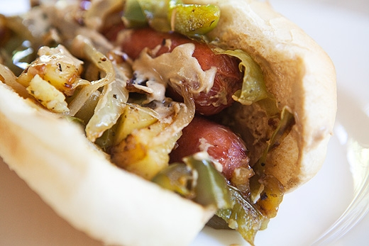
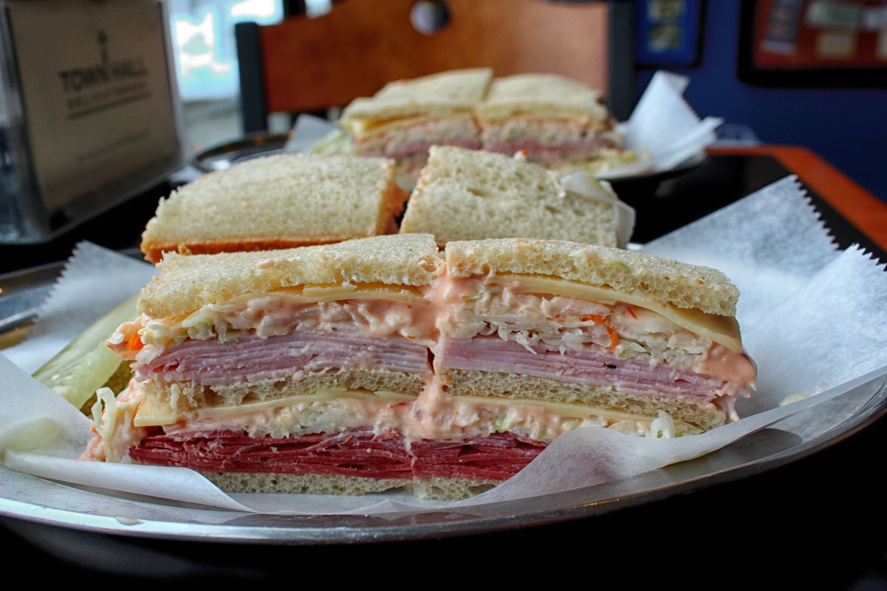
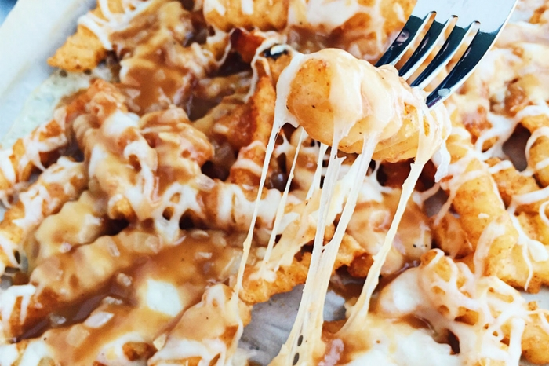

NJ Food
Jump to ContentPork Roll
Outside of New Jersey, not many people have heard of or tried pork roll. But, for the people of New Jersey, pork roll is a breakfast staple. Pork roll is a processed pork product that is smoked and then packaged in a tube-like casing. A huge debate in New Jersey is whether this product is called pork roll or taylor ham, the correct answer is clearly pork roll. The original name was "John Taylor's Original Taylor Pork Roll" which was later shortened to pork roll.
Italian Hot Dog
This New Jersey dish is very popular. An italian hot dog consists of a (usually fried) hot dog inside an italian roll or pizza bread, then it is topped with bell peppers, onions, and potatoes. While this sandwich is simple, it is very delicious and enjoyed by many.
The Sloppy Joe
To many, a sloppy joe sandwich is a sandwich with seasoned ground beef on a hamburger bun. In New Jersey, a sloppy joe can be known as something else. A New Jersey sloppy joe is a double decker sandwich on rye made with 1-3 types of deli meat like turkey, corned beef, pastrami, roast beef, or ham. The toppings include swiss cheese, cole slaw, and russian dressing. These decadent sandwiches are delicious and should be tried by anyone visiting New Jersey.
Salt Water Taffy
Known for its sticky texture, salt water taffy is a specific type of soft taffy that originated in Atlantic City, NJ. While salt water taffy is popular in a few other places in the U.S., none of them produce and market salt water taffy at the same scale as New Jersey. Contrary to the name, salt water taffy does not actually contain salt water. It simply contains both salt and water.
Disco Fries
Disco fries may seem to be the same as poutine, but they are actually different. While the two are similar, New Jersey puts a special twist on this dish to make it unique. A diner favorite, disco fries are fries that are topped with gravy and mozzarella cheese. Simple, yet so popular and delicious.